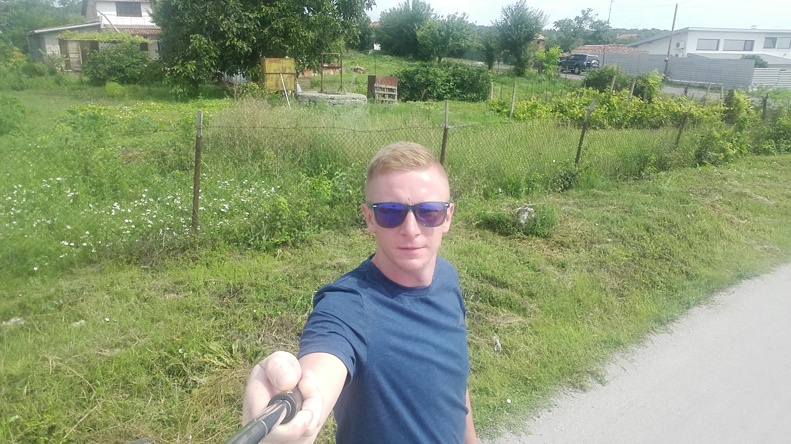

Pańcia Dadzia ! Moja Kochana :)
 Ona jest niesamowita. Fajnie pachnie i lubi się ze mną droczyć. Często mnie tarmosi po warach, ale w sumie to lubię. Mamy swój poranny rytuał. Gdy tylko się obudzę, idę pod drzwi sypialini i opieram się o nie. Wtedy drzwi się uchylają a ja wskakuję pod kołdrę, aby ogrzać panią ( i oczywiście siebie). Moja Pańcia jest PIĘKNA i MĄDRA! Zawsze wie czego mi trzeba. Uwielbiamy razem gotować. Zawsze coś mi spadnie. Szczególnie lubię pomagać przy śniadaniu. Przyznaję Dadzia nie potrafi oprzeć się mojemu urokowi i zawsze coś mi da na spróbowanie. Pani zabiera mnie również na spacery i często rzuca mi kija. A najczęściej dwa, bo jak już załpie jeden to go nie chcę oddać. Nie panuję nad tym. Wieczorami oglądamy razem seriale. Oczywiście na kocyku. Pańcia bardzo nie lubi jak liżę łapki bo potem musi myć podłogę i sprzątać po mnie. Ale nie wiem jak jej to wytłumaczyć, że jest to silniejsze ode mnie... Kocham Moją Pańcię Dadzię !
Ona jest niesamowita. Fajnie pachnie i lubi się ze mną droczyć. Często mnie tarmosi po warach, ale w sumie to lubię. Mamy swój poranny rytuał. Gdy tylko się obudzę, idę pod drzwi sypialini i opieram się o nie. Wtedy drzwi się uchylają a ja wskakuję pod kołdrę, aby ogrzać panią ( i oczywiście siebie). Moja Pańcia jest PIĘKNA i MĄDRA! Zawsze wie czego mi trzeba. Uwielbiamy razem gotować. Zawsze coś mi spadnie. Szczególnie lubię pomagać przy śniadaniu. Przyznaję Dadzia nie potrafi oprzeć się mojemu urokowi i zawsze coś mi da na spróbowanie. Pani zabiera mnie również na spacery i często rzuca mi kija. A najczęściej dwa, bo jak już załpie jeden to go nie chcę oddać. Nie panuję nad tym. Wieczorami oglądamy razem seriale. Oczywiście na kocyku. Pańcia bardzo nie lubi jak liżę łapki bo potem musi myć podłogę i sprzątać po mnie. Ale nie wiem jak jej to wytłumaczyć, że jest to silniejsze ode mnie... Kocham Moją Pańcię Dadzię !
Maciek - Pańcio
Pamiętacie jak szczekałem wam, że jak po mnie przyjechali i złapałem ich za sercę to mnie tak obserwował? Ten to ma oko. Wszystko widzi (choć czasami chyba udaje, że jest inaczej, szczególnie jak zrobię włam do sypialni albo jak uda mi się wyprosić coś do jedzenia poza regularnymi posiłkami. Specjalista od spacerów. Rzadko rzuca mi kija ale potrafi to zastąpić. Szybkim krokiem potrafimy zwiedzić całą okolicę. Nazywam to obejsciem dzielnicy i sprawdzam, wszystkie nowe zapachy. Rano jak wyciągnie mnie z kuchni (gdy pomagam przy śniadaniu) to zaraz na spacerze potrafi mnie rozbudzić. Poranna toaleta i kilka kręciołków na chodniku i pies jest gotowy. Potem szybki powrót do domu na jedzenie. Pan czasami przycina mi pazurki. Nie lubę tego ale pozwala mi to potem na lepsze skradanie się do sypialni, bo nie słychać jak idę :D Oboje z Panią mnie bardzo kochają i wygląda na to, że dostali na moim punkcie swego rodzaju głupawki :) Jest nam razem dobrze.